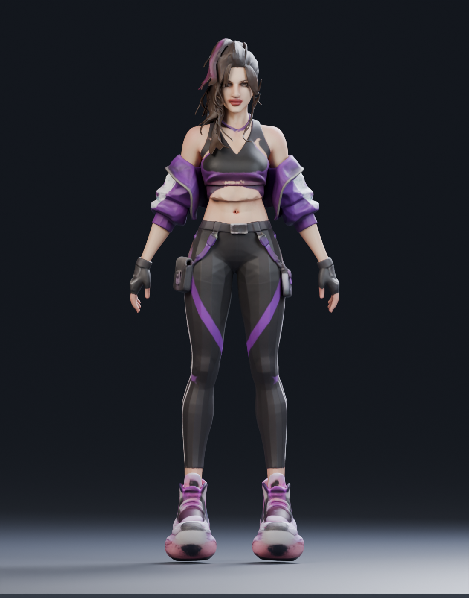
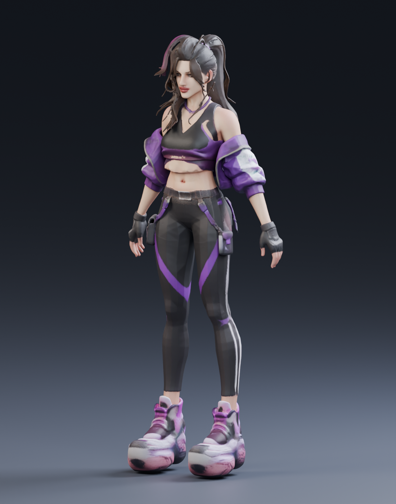
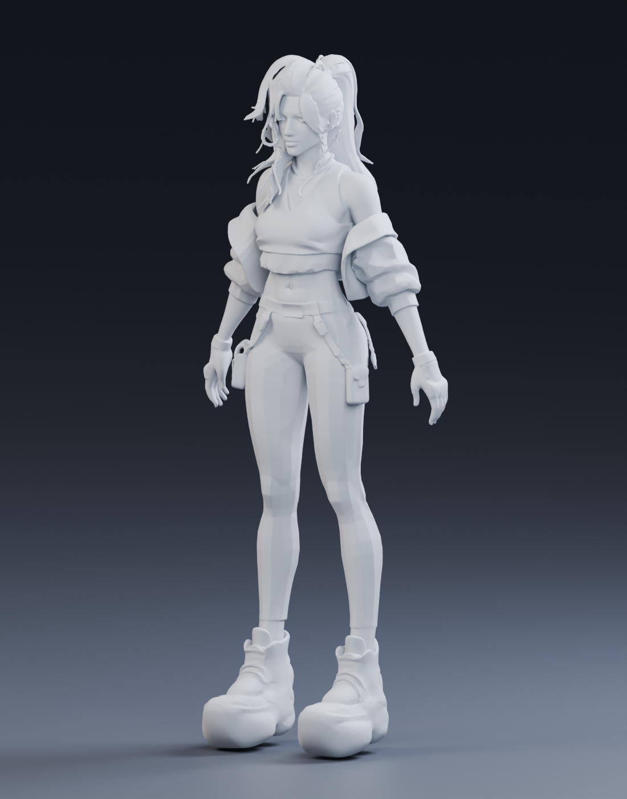
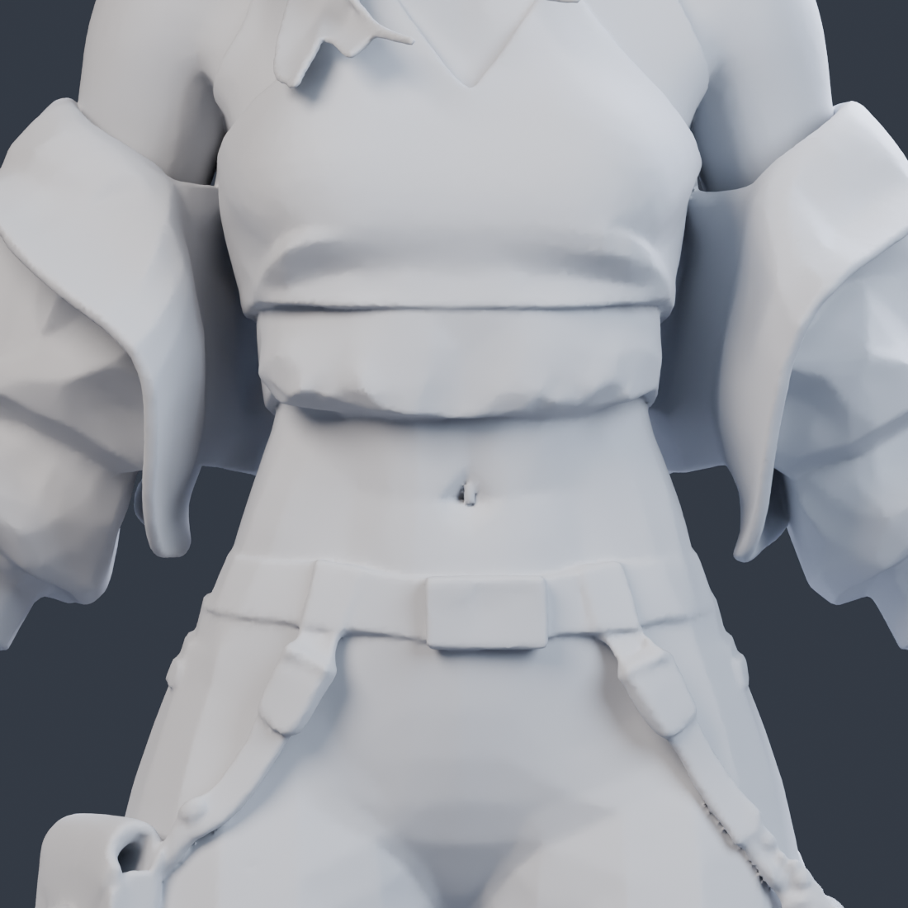

Phase 2.1 · Non-Destructive Restoration
NYRA Candidate A — Checkpoint 1 Quality Review
Targeted removal of the abnormal horizontal abdominal ridge with zero procedural replacement and 100% anatomical/textural preservation.
Active Base Mesh
Candidate A
Source preserved unmodified
Total Vertices
724,640
100% topology preserved
Modified Vertices
8,770 (1.21%)
Strictly abdominal ROI
Max Protrusion Fixed
18.22 mm
Shaved to natural contour
Outside ROI Shift
0.0000 mm
Face, hair, limbs untouched
Dark Texels Restored
8,870
Warm skin tone restored
1. Full Figure — Front View (Cycles AgX, Identical Studio Lighting)

2. Full Figure — Three-Quarter View


3. Full Figure — Clay Neutral Shading (Pure Geometry Verification)


4. Abdominal Macro Close-Up (Textured)


5. Abdominal Macro Close-Up (Clay Geometry)


Deliverables & Editable Assets
- Editable Blender Master:
recovery/nyra/restoration/checkpoint-1/nyra-restoration-checkpoint1.blend - Exported glTF/GLB:
recovery/nyra/restoration/checkpoint-1/nyra-a-restored.glb - Targeted Script:
scripts/restore_candidate_a_checkpoint1.py - Metrics & Inventory:
recovery/nyra/restoration/checkpoint-1/mesh-statistics.json - GitHub Commit:
bb7501c
In accordance with stop conditions, all further refinement is halted awaiting human visual approval.